Imports
using Distributions
using Random
using LinearAlgebra
using StatsBase
using CairoMakie
using Colors
using ColorSchemes
cmap = ColorSchemes.seaborn_colorblind6;k-means vs. Gaussian Mixture Models (GMM)
Connor Robertson
I recently read a great overview of Gaussian Mixture Models and thought, “Man, I’d like to see this clustering visualized.” So here I am to visualize it myself.
Best thing to do is just read the Wikipedia, but the general procedure here is:
That’s all very abstract, but I will define it for each of our cases more concretely (which, fortunately, are simple).
k-means is a clustering algorithm that looks to find \(k\) clusters in a dataset which are parametrized by the mean of the cluster. Go figure. The naive algorithm for k-means is Lloyd’s algorithm which has the following steps (in a similar spirit to EM):
To explore this idea, let’s consider two sets of sample data from some Gaussian distributions in two dimensions. The first will be circular (diagonal covariance matrix) and the second will be skewed (dense covariance matrix). Let’s write this out in simple code:
# Settings
n_distributions = 5
n_samples = 20
# Means/variances/covariances
Random.seed!(1234)
means = [2i*rand(2) for i in 1:n_distributions]
vars_1 = [0.2*i*rand() for i in 1:n_distributions]
covs_2 = []
for i in 1:n_distributions
cov = 0.2i*rand(2,2)
cov = cov' * cov # Ensure its positive definite
push!(covs_2, cov)
end
# Create distributions
dists_1 = [create_spherical_gaussian(m, v) for (m,v) in zip(means, vars_1)]
dists_2 = [create_oblong_gaussian(m, c) for (m,c) in zip(means, covs_2)]
# Sample distributions
samples_1 = [rand(d, n_samples) for d in dists_1]
samples_2 = [rand(d, n_samples) for d in dists_2]
# Create datasets (combine samples and shuffle)
data_1 = hcat(samples_1...)[:,randperm(n_distributions*n_samples)]
data_2 = hcat(samples_2...)[:,randperm(n_distributions*n_samples)];We can plot the samples we’ve taken from the distributions to get a sense of the clustering:
fig = Figure(size=(800,400))
ax1 = Axis(fig[1,1])
ax2 = Axis(fig[1,2])
for i in 1:n_distributions
scatter!(ax1, samples_1[i][1,:], samples_1[i][2,:], color=cmap[i], label=nothing)
scatter!(ax2, samples_2[i][1,:], samples_2[i][2,:], color=cmap[i], label="Distribution $i")
end
hidedecorations!(ax1, ticklabels=false)
hidedecorations!(ax2, ticklabels=false)
axislegend(ax2; position=:lt)
display(fig);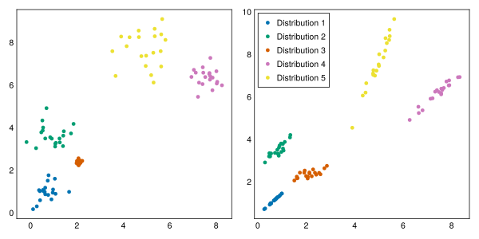
Now that we have some sample data to try to cluster, let’s implement a simple k-means algorithm using the steps in Important 2:
function distances_to_center(data, center)
distances = zeros(size(data,2))
for i in 1:size(data,2)
distances[i] = mean((data[:,i] .- center).^2)
end
return distances
end
function plot_cluster_results!(fig, centers, labels, data, true_data)
n_clusters = length(true_data)
k = size(centers, 2)
ax1 = Axis(fig[1,1])
ax2 = Axis(fig[1,2])
for i in 1:k
approx_cluster = data[:,labels .== i]
scatter!(ax1, approx_cluster[1,:], approx_cluster[2,:], color=cmap[i], label="Approx cluster $i")
scatter!(ax1, [centers[1,i]], [centers[2,i]], color=cmap[i], marker=:star5, markersize=10, label=nothing, strokewidth=2)
end
for i in 1:n_clusters
scatter!(ax2, true_data[i][1,:], true_data[i][2,:], color=cmap[i], label="True cluster $i")
end
hidedecorations!(ax1, ticklabels=false)
hidedecorations!(ax2, ticklabels=false)
axislegend(ax1; position=:rb)
axislegend(ax2; position=:rb)
return fig
end;
function animate_kmeans!!(centers, data_labels, data, samples, filename)
fig = Figure(size=(800,400))
record(fig, filename; framerate=2) do io
converged = false
nsteps = 1
while converged == false
# Clear the figure
empty!(fig)
# Step
converged = kmeans!!(centers, data_labels, data, 1)
# Plot
plot_cluster_results!(fig, centers, data_labels, data, samples)
text!(fig.scene, 5, 0, text="Step: $nsteps", font=:bold)
# Capture frame
recordframe!(io)
nsteps += 1
end
end
end;function kmeans!!(centers, data_labels, data, max_steps=100, tol=1e-5)
k = size(centers,2)
center_shift = Inf * ones(k)
nsteps = 0
while (maximum(center_shift) > tol) & (nsteps < max_steps)
# Compute the distance from each center to our data and assign closest
distances = hcat([distances_to_center(data, c) for c in eachcol(centers)]...)
data_labels .= [argmin(d) for d in eachrow(distances)]
# Reassign centers to mean of closest data
for i in 1:k
closest_data = data[:,data_labels .== i]
new_center = mean(closest_data, dims=2)
center_shift[i] = norm(centers[:,i] .- new_center)
centers[:,i] .= new_center
end
nsteps += 1
end
return (maximum(center_shift) < tol)
endkmeans!! (generic function with 3 methods)# Sample initial cluster centers within our sample data
Random.seed!(1)
k = 5
smin = minimum(data_1, dims=2)
smax = maximum(data_1, dims=2)
centers = (smax - smin) .* rand(2,k) .+ smin
data_labels = ones(Int64, size(data_1,2))
# Repeat steps 2 and 3 until centers aren't moving
kmeans!!(centers, data_labels, data_1)
# Visualize results
fig = Figure(size=(800,400))
plot_cluster_results!(fig, centers, data_labels, data_1, samples_1)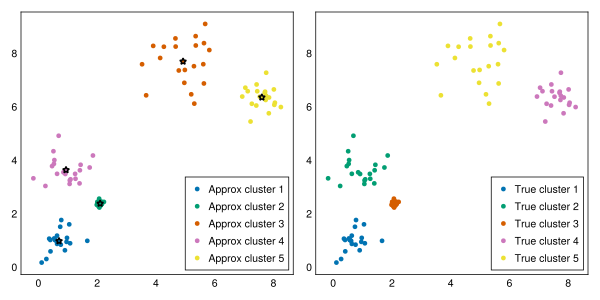
Notice that the results are highly dependent on our initial sampling. If we adjust the random seeding for the initial centers, we don’t get such nice results:
# Sample initial cluster centers within our sample data
Random.seed!(2)
k = 5
smin = minimum(data_1, dims=2)
smax = maximum(data_1, dims=2)
centers = (smax - smin) .* rand(2,k) .+ smin
data_labels = ones(size(data_1,2))
# Execute
kmeans!!(centers, data_labels, data_1)
# Visualize results
fig = Figure(size=(800,400))
plot_cluster_results!(fig, centers, data_labels, data_1, samples_1)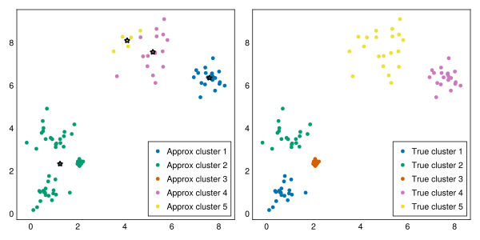
We can also try this on our second dataset:
# Sample initial cluster centers within our sample data
Random.seed!(1)
k = 5
smin = minimum(data_2, dims=2)
smax = maximum(data_2, dims=2)
centers = (smax - smin) .* rand(2,k) .+ smin
data_labels = ones(size(data_2,2))
# Execute
kmeans!!(centers, data_labels, data_2)
# Visualize results
fig = Figure(size=(800,400))
plot_cluster_results!(fig, centers, data_labels, data_2, samples_2)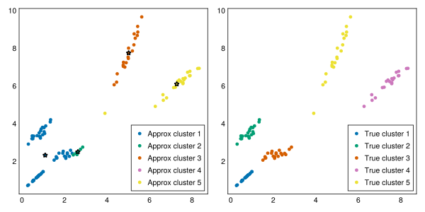
Now, the entire purpose of this document is actually to visually explore the methods as they evolve, so let’s set up some animation structure. Fortunately, Makie.jl makes this easy. We only need to iteratively take a step and capture the plotted frame at each step.
Random.seed!(5)
k = 5
smin = minimum(data_1, dims=2)
smax = maximum(data_1, dims=2)
centers = (smax - smin) .* rand(2,k) .+ smin
data_labels = ones(size(data_1,2))
animate_kmeans!!(centers, data_labels, data_1, samples_1, "gifs/kmeans.gif")"gifs/kmeans.gif"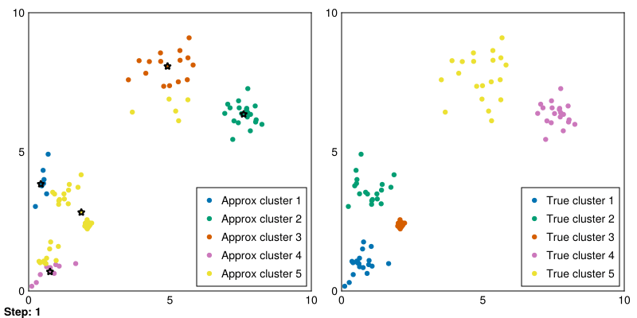
Amazing! Now we can see the progress of kmeans in each step (where the stars represent the cluster means).
Gaussian mixture models really boil down to using a Gaussian distribution for each cluster. With these cluster distributions, we can assign a cluster probability to each data point and then subsequently update the distributions to new means and covariances. This procedure is a true EM process because it aims to maximize the probability of cluster inclusion for each datapoint.
The naive algorithm for this EM procedure is as follows:
To start, we are going to implement Important 3 by considering spherical Gaussians in which the covariance is a diagonally constrained.
function plot_gaussians(gaussians)
# Show initial gaussian clusters
fig = Figure()
ax = Axis(fig[1,1])
sample_x = range(smin[1], smax[1], 1000)
sample_y = range(smin[2], smax[2], 1000)
for (i,g) in enumerate(gaussians)
sample_pdfs = [pdf(g, [x,y]) for x in sample_x, y in sample_y]
sample_pdfs ./= sum(sample_pdfs)
my_colormap = reverse([cmap[i]*(1 - j/256) + RGB(1, 1, 1)*(j/256) - RGBAf(0,0,0,j/256) for j in 0:256-1])
contourf!(sample_x, sample_y, sample_pdfs, colormap=my_colormap, label="Gaussian $i")
end
axislegend(ax; position=:rb)
hidedecorations!(ax, ticklabels=false)
end
function plot_gmm_results!(fig, gaussians, labels, data, true_data)
n_clusters = length(true_data)
k = size(centers, 2)
sample_x = range(smin[1], smax[1], 1000)
sample_y = range(smin[2], smax[2], 1000)
ax1 = Axis(fig[1,1])
ax2 = Axis(fig[1,2])
for i in 1:k
approx_cluster = data[:,labels .== i]
scatter!(ax1, approx_cluster[1,:], approx_cluster[2,:], color=cmap[i], label="Approx cluster $i")
sample_pdfs = [pdf(gaussians[i], [x,y]) for x in sample_x, y in sample_y]
my_colormap = reverse([cmap[i]*(1 - j/256) + RGB(1, 1, 1)*(j/256) - RGBAf(0,0,0,j/256) for j in 0:256-1])
contourf!(ax1, sample_x, sample_y, sample_pdfs, colormap=my_colormap, label=nothing)
end
for i in 1:n_clusters
scatter!(ax2, true_data[i][1,:], true_data[i][2,:], color=cmap[i], label="True cluster $i")
end
hidedecorations!(ax1, ticklabels=false)
hidedecorations!(ax2, ticklabels=false)
axislegend(ax1; position=:rb)
axislegend(ax2; position=:rb)
return fig
end;
# Execute one step at a time, visualize results at each step, then record a frame
function animate_gmm!!(gaussians, data_labels, data, samples, filename)
fig = Figure(size=(800,400))
record(fig, filename; framerate=2) do io
converged = false
nsteps = 1
while converged == false
# Clear the figure
empty!(fig)
# Step
converged = gmm!!(gaussians, data_labels, data, 1)
# Plot
plot_gmm_results!(fig, gaussians, data_labels, data, samples)
text!(fig.scene, 5, 0, text="Step: $nsteps", font=:bold)
# Capture frame
recordframe!(io)
nsteps += 1
end
end;
endanimate_gmm!! (generic function with 1 method)# Sample initial cluster means and variances
Random.seed!(1)
k = 5
smin = minimum(data_1, dims=2)
smax = maximum(data_1, dims=2)
means = (smax - smin) .* rand(2,k) .+ smin
vars = ones(k)
gaussians = [MvNormal(means[:,i],vars[i]) for i in 1:k]
data_labels = ones(Int64, size(data_1,2))
plot_gaussians(gaussians);As you can observe, we have some great circular starting distributions. We now need to align these with the data. Let’s implement the GMM procedure from Important 3:
function gmm!!(gaussians::Vector{IsoNormal}, data_labels, data, max_steps=100, tol=1e-5)
k = length(gaussians)
ll_shift = 10.0
nsteps = 0
gweights = ones(k) ./ k
data_weights = zeros(length(data_labels),k)
while (ll_shift > tol) & (nsteps < max_steps)
# Compute the pdfs for each datapoint to each gaussian and assign the most probable
cluster_probs = hcat([pdf(g, data) for g in gaussians]...)
ll_old = sum(log.(cluster_probs * gweights))
all_weight = cluster_probs * gweights
data_weights .= gweights' .* cluster_probs ./ all_weight
# Reassign gaussians to weighted means and std devs
for i in 1:k
Nk = sum(data_weights[:,i])
new_mean = sum(data .* data_weights[:,i]', dims=2) ./ Nk
new_std = sqrt(mean(sum((data .- new_mean).^2 .* data_weights[:,i]', dims=2) ./ Nk))
gaussians[i] = MvNormal(vec(new_mean), new_std)
end
# Check change in log likelihood for convergence
cluster_probs = hcat([pdf(g, data) for g in gaussians]...)
ll_new = sum(log.(cluster_probs * gweights))
ll_shift = ll_new - ll_old
ll_old = ll_new
nsteps += 1
end
data_labels .= [argmax(d) for d in eachrow(data_weights)]
return (ll_shift < tol)
end;Now, let’s put it all together and run it for our initial distributions.
Random.seed!(5)
k = 5
smin = minimum(data_1, dims=2)
smax = maximum(data_1, dims=2)
means = (smax - smin) .* rand(2,k) .+ smin
vars = ones(k)
gaussians = [MvNormal(means[:,i],vars[i]) for i in 1:k]
data_labels = ones(Int64, size(data_1,2))
animate_gmm!!(gaussians, data_labels, data_1, samples_1, "gifs/gmm1.gif");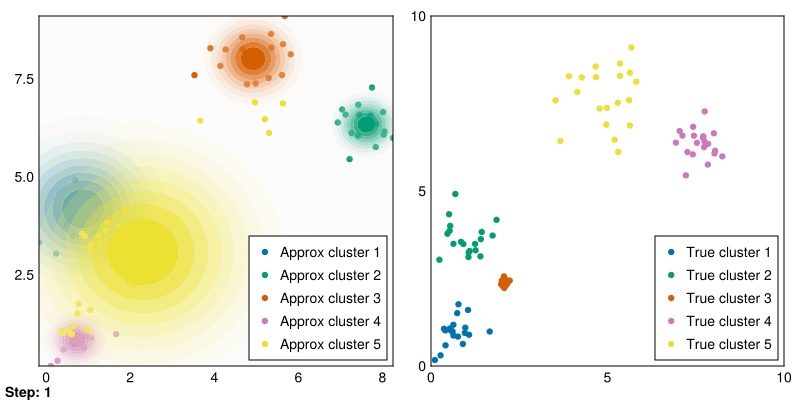
Great! These are pretty good fits. However, applying it to our second dataset quickly reveals that spherical Gaussians just won’t cut it:
Random.seed!(1)
k = 5
smin = minimum(data_1, dims=2)
smax = maximum(data_1, dims=2)
means = (smax - smin) .* rand(2,k) .+ smin
vars = ones(k)
gaussians = [MvNormal(means[:,i],vars[i]) for i in 1:k]
data_labels = ones(Int64, size(data_2,2))
animate_gmm!!(gaussians, data_labels, data_2, samples_2, "gifs/gmm2.gif");Instead, we can modify our calculation of the variance in the gmm!! function to calculate the full covariance matrix:
function gmm!!(gaussians::Vector{FullNormal}, data_labels, data, max_steps=100, tol=1e-5)
k = length(gaussians)
ll_shift = 10.0
nsteps = 0
gweights = ones(k) ./ k
data_weights = zeros(length(data_labels),k)
while (ll_shift > tol) & (nsteps < max_steps)
# Compute the pdfs for each datapoint to each gaussian and assign the most probable
cluster_probs = hcat([pdf(g, data) for g in gaussians]...)
ll_old = sum(log.(cluster_probs * gweights))
all_weight = cluster_probs * gweights
data_weights .= gweights' .* cluster_probs ./ all_weight
# Reassign gaussians to weighted means and std devs
for i in 1:k
Nk = sum(data_weights[:,i])
new_mean = sum(data .* data_weights[:,i]', dims=2) ./ Nk
new_std = mean([(d .- new_mean)*(d .- new_mean)' for d in eachcol(data)], weights(data_weights[:,i]))
gaussians[i] = MvNormal(vec(new_mean), new_std)
end
# Check change in log likelihood for convergence
cluster_probs = hcat([pdf(g, data) for g in gaussians]...)
ll_new = sum(log.(cluster_probs * gweights))
ll_shift = ll_new - ll_old
ll_old = ll_new
nsteps += 1
end
data_labels .= [argmax(d) for d in eachrow(data_weights)]
return (ll_shift < tol)
end;Random.seed!(1)
k = 5
smin = minimum(data_1, dims=2)
smax = maximum(data_1, dims=2)
means = (smax - smin) .* rand(2,k) .+ smin
vars = []
for i in 1:k
A = I(2) .+ rand(2,2)
push!(vars,A' * A)
end
gaussians = [MvNormal(means[:,i],vars[i]) for i in 1:k]
data_labels = ones(Int64, size(data_2,2))
animate_gmm!!(gaussians, data_labels, data_2, samples_2, "gifs/gmm3.gif");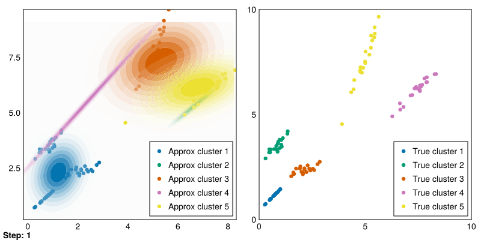
The clusters aren’t perfectly recovered (due to the initialization), but you can see that the Gaussians cover the data much more precisely.
Now that we have fully fledged approaches for clustering with expectation maximization, let’s consider better initializations:
function plot_centers!(fig, centers, true_data)
n_clusters = length(true_data)
k = size(centers, 2)
ax1 = Axis(fig[1,1])
for i in 1:n_clusters
scatter!(ax1, true_data[i][1,:], true_data[i][2,:], color=cmap[i], label="True cluster $i")
end
for i in 1:k
scatter!(ax1, [centers[1,i]], [centers[2,i]], color=:black, marker=:star5, markersize=10, label=nothing, strokewidth=2)
end
hidedecorations!(ax1, ticklabels=false)
axislegend(ax1; position=:rb)
return fig
end;function forgy_init(data, k)
return hcat(sample(eachcol(data), k, replace=false)...)
end
function random_init(data, k)
cluster_ids = sample(1:k, size(data,2))
return hcat([mean(data[:,cluster_ids .== i], dims=2) for i in 1:k]...)
end
function kpp_init(data, k)
means = [sample(eachcol(data))]
for i in 2:k
dists = sum(hcat([norm.(eachcol(data .- m)).^2 for m in means]...), dims=2)
dists ./= sum(dists)
new_mean = sample(eachcol(data), weights(dists))
push!(means, new_mean)
end
return hcat(means...)
end;Random.seed!(1)
# Forgy
fig = Figure(size=(600,400))
centers = forgy_init(data_1, 5)
plot_centers!(fig, centers, samples_1)
fig.content[1].title = "Forgy"
display(fig);
# Random partition
fig = Figure(size=(600,400))
centers = random_init(data_1, 5)
plot_centers!(fig, centers, samples_1)
fig.content[1].title = "Random partition"
display(fig);
# Kpp
fig = Figure(size=(600,400))
centers = kpp_init(data_1, 5)
plot_centers!(fig, centers, samples_1)
fig.content[1].title = "Kpp";
display(fig);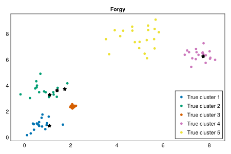
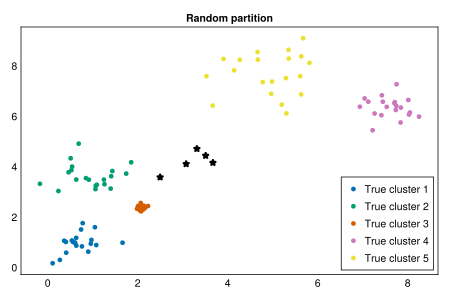
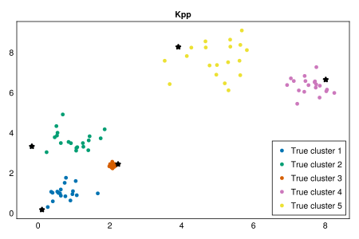
In this case, it is immediately obvious that the kmeans++ technique yielded the best, most spread centers that will work well with either our kmeans or GMM algorithms. On the other hand, the Forgy yielded data which was too clustered, something that can easily occur if there is an imbalance in representation between samples from different clusters. The Random partition approach gave points which were somewhat reasonable, but very centered. In this case, it is possible that kmeans or GMM does capture the correct cluster partitions, but also possible that some clusters are grouped.
Now, given improved initialization approaches, let’s rerun our kmeans and GMM approaches with random seeds that previously posed challenges:
# For dataset 1
Random.seed!(2)
k = 5
means = kpp_init(data_1, k)
vars = []
for i in 1:k
A = I(2) .+ rand(2,2)
push!(vars,A' * A)
end
gaussians = [MvNormal(means[:,i],vars[i]) for i in 1:k]
data_labels = ones(size(data_2,2))
gmm!!(gaussians, data_labels, data_1)
fig = Figure(size=(800,400))
plot_gmm_results!(fig, gaussians, data_labels, data_1, samples_1)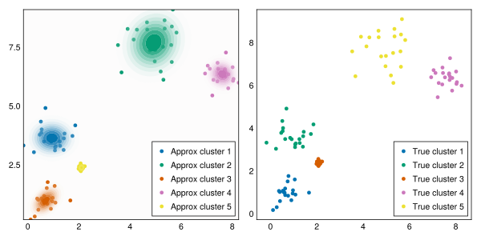
# For dataset 2
Random.seed!(2)
k = 5
means = kpp_init(data_2, k)
vars = []
for i in 1:k
A = I(2) .+ rand(2,2)
push!(vars,A' * A)
end
gaussians = [MvNormal(means[:,i],vars[i]) for i in 1:k]
data_labels = ones(size(data_2,2))
gmm!!(gaussians, data_labels, data_2)
fig = Figure(size=(800,400))
plot_gmm_results!(fig, gaussians, data_labels, data_2, samples_2)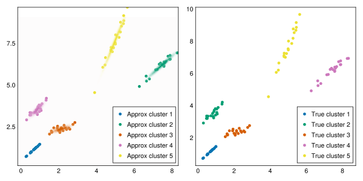
Great fits!